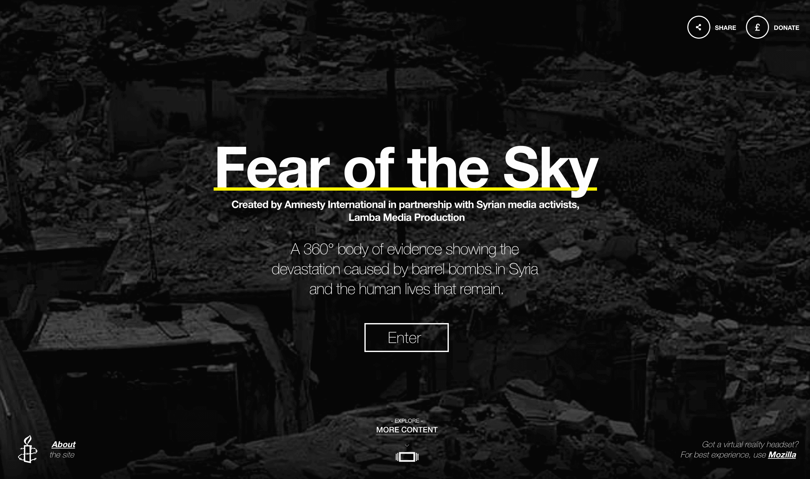
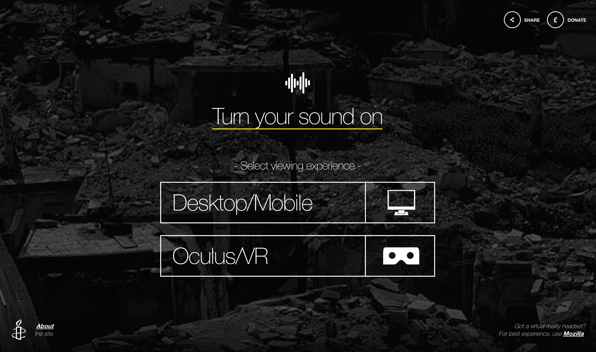
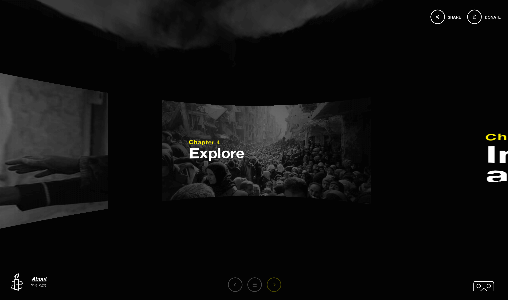
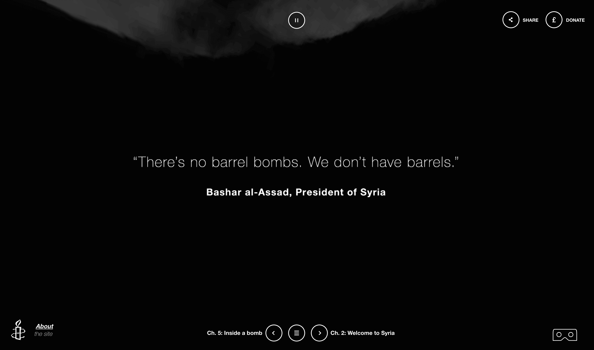
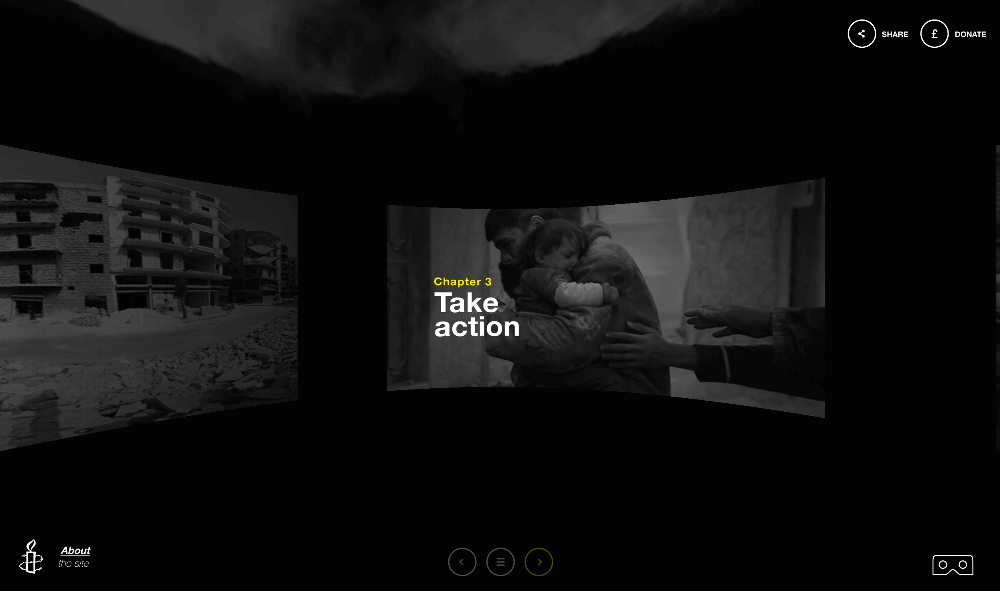

<!DOCTYPE html>
<html></html>
    <head>
        <meta charset="utf-8">
        <meta http-equiv="X-UA-Compatible" content="IE=edge">
        <meta name="viewport" content="width=device-width"/>
        <title>Peter An-Designer</title>
        <link rel="stylesheet" href="amnesty.css">
        <link rel="stylesheet" href="../owl-carousel/owl.carousel.css">
        <link rel="stylesheet" href="../owl-carousel/owl.theme.css">
    </head>

    <body>
            <header class="head">
           <a href="../index.html"><h5>The Design and Directory of Peter An</h5></a>
            <h5 class="end"><a href="archive.html">Archive</a></h5>
        </header>

        <div class="container">
        <div id="owl-demo" class="owl-carousel owl-theme">
            <div class="item"><iframe src="https://player.vimeo.com/video/160378234?title=0&byline=0&portrait=0" width="700" height="393" frameborder="0" webkitallowfullscreen mozallowfullscreen allowfullscreen></iframe>
            </div>
            <div class="item3"></div>
            <div class="item3"></div>
            <div class="item3"></div>
            <div class="item3"></div>
            <div class="item3"></div>
            <div class="item3"></div>
<!--
            <div class="item">
            </div>
-->

</div>

            <div class="text">
        <div class="descript">
            <p>Fear of the Sky is a Virtual Reality project for Amnesty International showcasing the realities of the Syrian Civil War. This is a dramatic trailer currently in consideration for the Golden Lion cut together using footage from BBC and Amnesty International. Using cinematic narrative conventions to build a tense atmosphere I carefully crafted the trailer to show both the horrors of the Syrian War as well as the features of the V.R. experience. I also worked on the UX and UI of the site and learned of the challenges with designing for VR. Check out the experience at <a href="http://www.360syria.com/">360syria.com</a></p>
        </div>
        <div class="info">
        <p><span>Project Name : Amnesty International Fear of the Sky</span></p>
             <p><span>Type : Narrative Film-making, Motion Graphic, Video Trailer</span></p>
             <p><span>Tools Used : Premiere Pro, After Effects, Illustrator, Audition</span></p>
            </div>
        </div>
    </div>

    <footer>
          <h5 class="footer-links"><a href="https://medium.com/@peetparkaa" class="foot-1">scripts</a></h5>
        </footer>

    <script src="https://ajax.googleapis.com/ajax/libs/jquery/1.12.0/jquery.min.js">
</script>
<script src="../owl-carousel/owl.carousel.js"></script>

<script>
    $(document).ready(function() {
  $("#owl-demo").owlCarousel({

      navigation : true, // Show next and prev buttons
      slideSpeed : 300,
      paginationSpeed : 400,
      singleItem:true
  });
});
    </script>
    </body>
</html>
